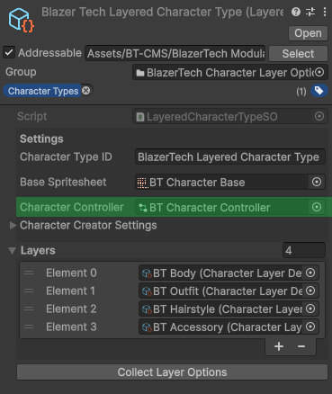

Character Animation Setup
This guide explains how to create and configure an Animator Controller for use with a Character Type.
Overview
Each Character Type can include an Animator Controller.
This controller defines how animations are played using sprites from the Base Spritesheet specified in the Character Type.
The setup process is the same for both Unified and Layered Character Types.
Important
All animations must only use sprites from the Base Spritesheet.
If sprites from other sheets are used, they will not render correctly when used with the Character Shader.
If you already have your own movement or animator handling scripts, you may configure your Animator Controller however you wish—adding your own parameters, animation states, or blend trees.
Integration with Built-In Scripts
The BlazerTech Character Management System includes pre-built movement and animator handling scripts.
These scripts automatically support the following animation states:
- Idle
- Walk
- Sprint
- Crouch Idle
- Crouch Moving
Additional animations can be played at runtime using:
PlayAnimation("AnimationName");
on any Character Animator Handler component.
1️⃣ Create an Animator Controller
- In the Project Window, right-click and select:
Create → Animation → Animator Controller - Name the asset (e.g., after the Character Type it’s used for).
- Double-click it to open the Animator Window.
You should now see an empty Animator Controller.
2️⃣ Add Parameters
The built-in Character Animator Handler components do not play animations directly.
Instead, they modify parameters within the Animator Controller, which control transitions between animation states.
Open the Parameters tab in the top-left of the Animator Window.

Required Parameters
| Parameter Name | Type | Description |
|---|---|---|
| Horizontal Movement | Float | Ranges from -1 to 1. Represents left/right movement on the X-axis. |
| Vertical Movement | Float | Ranges from -1 to 1. Represents up/down movement on the Y-axis. |
| Is Moving | Bool | True when the character is moving; false otherwise. |
Optional Parameters
These are used only if toggled in the included handler components.
| Parameter Name | Type | Description |
|---|---|---|
| Is Sprinting | Bool | True when the character is sprinting. |
| Is Crouching | Bool | True when the character is crouching. |
Important
Parameter names must match exactly with those used in the built-in Animator Handler scripts.
3️⃣ Add Animation States
Because the built-in handlers only modify parameters, you can design your animation state layout freely.
A common approach is to use Blend Trees for animations that play in four directions (Up, Down, Left, Right)—such as Idle and Walk.
Create Animation Clips
In the Project Window, right-click and choose:
Create → Animation → Animation Clip
You’ll typically create eight animation clips:
Idle:
- Idle Down
- Idle Up
- Idle Left
- Idle Right
Walk:
- Walk Down
- Walk Up
- Walk Left
- Walk Right
You can leave these empty for now—we’ll add frames later.
Create Blend Trees
Repeat the following for each four-direction animation set (e.g., Idle, Walk).
- Right-click in the Animator window → Create State → From New Blend Tree.
- Name it (e.g.,
IdleorWalk). - Double-click the blend tree to open it.
- Set Blend Type to
2D Simple Directional. - Assign Blend Parameters to:
- X:
Horizontal Movement - Y:
Vertical Movement
- X:
- Add motions for each direction (Up, Down, Left, Right).
- Assign the corresponding animation clips.
- Set coordinates for each direction:
| X | Y | Direction |
|---|---|---|
| 0 | -1 | Down |
| 0 | 1 | Up |
| -1 | 0 | Left |
| 1 | 0 | Right |

4️⃣ Setup State Transitions
Let’s define how the Animator transitions between states.
- Right-click the Idle blend tree → Set as Layer Default State.
- Right-click Idle → Make Transition → Click Walk.
- Select the new transition line.
- Add a Condition:
- Parameter:
Is Moving - Value:
true - Disable Has Exit Time (for instant transitions).
- Parameter:
Now, when the character moves, it transitions from Idle to Walk.
Next, create the reverse transition (Walk → Idle) with:
- Condition:
Is Moving = false
When movement stops, the character will return to Idle automatically.
5️⃣ Setup Animation Clips
Now it’s time to add your sprite frames to the animation clips.
- Create or select a GameObject with:
- Animator
- Sprite Renderer
- Open the Animation Window.
- Select an animation clip (e.g.,
Idle Down). - Select all sprite frames.
- Drag and drop them into the Timeline.
- Adjust Samples — the animation’s frame rate.
- Recommended: 12 FPS (for smooth 2D animation).
Repeat this for each of your Idle and Walk clips.
6️⃣ Add Additional Animations (Optional)
You can expand your Animator with as many custom animations as needed.
Single-Direction Animations
For animations that only play in one direction (e.g., Attack Down):
- Create a new state.
- Assign the clip directly.
Multi-Directional Animations
For directional animations (e.g., Attack in four directions):
- Create another Blend Tree using the same parameter setup (
Horizontal Movement,Vertical Movement).
When played, the Blend Tree automatically chooses the correct direction.
If an animation is not looped, add a transition back to Idle or the Exit node.
Animations can be triggered manually via:
animator.Play("AnimationName");
or
animatorHandler.PlayAnimation("AnimationName");
(using the included Animator Handler components).
7️⃣ Assign Animator Controller to a Character Type
Once your Animator Controller is complete:
- Select the Character Type asset in the Project Window.
- In the Inspector, find the Character Controller field.
- Drag your new Animator Controller into this slot.
It should look like this:

When used with a Character Renderer component,
the assigned Animator Controller will automatically be applied at runtime.
✅ Summary
You’ve now set up:
- ✅ Animator Parameters
- ✅ Idle and Walk Blend Trees
- ✅ Direction-based transitions
- ✅ Sprite frame animations
- ✅ Integration with your Character Type
Your character is now fully ready for animation playback and runtime control through the BlazerTech Character Management System.